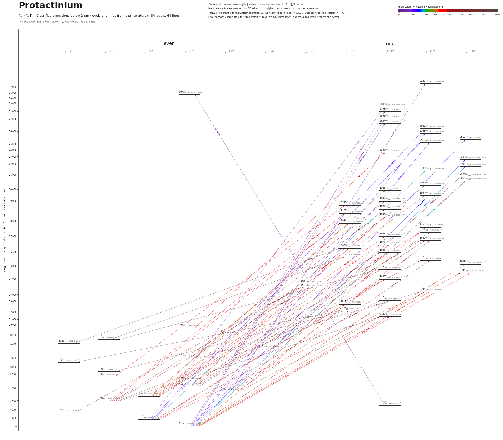

Protactinium energy level diagram
Energy levels and transitions of neutral protactinium (Pa I): 64 levels and 64 classified lines below 2 µm taken from the cited literature, each line with its vacuum wavelength and frequency. The NIST Atomic Spectra Database lists only the ground level and the ionisation limit of protactinium, so the level energies on this page are those of the literature sources named below.
Hover a line or a level to isolate it, click to keep it selected. Scroll to zoom, drag to move.

Download: diagram (PDF) diagram (SVG) transitions (CSV) levels (CSV) source code

Listed Pa transitions below 2 µm
| Lower level | Upper level | λ vacuum (nm) | λ air (nm) | ν (THz) | Type | |⟨J‖er‖J′⟩| (ea₀) | A (s⁻¹) | Branching (%) | Source of matrix element / A |
|---|---|---|---|---|---|---|---|---|---|
| 4K13/2 | (32234)°11/2 | 350.5968 | 350.4965 | 855.0919 | E1 | – | – | – | – |
| 4I°9/2 | (30658)11/2 | 357.1578 | 357.0559 | 839.3837 | E1 | – | – | – | – |
| 4K11/2 | (27989)°9/2 | 357.2840 | 357.1820 | 839.0873 | E1 | – | – | – | – |
| 4I9/2 | (28316)°9/2 | 363.7561 | 363.6524 | 824.1580 | E1 | – | – | – | – |
| 4K11/2 | (26999)°9/2 | 370.3796 | 370.2743 | 809.4194 | E1 | – | – | – | – |
| 4K11/2 | (26640)°9/2 | 375.3728 | 375.2661 | 798.6526 | E1 | – | – | – | – |
| 4K11/2 | (25810)°11/2 | 387.4455 | 387.3357 | 773.7669 | E1 | – | – | – | – |
| 4I9/2 | (26252)°11/2 | 393.2952 | 393.1839 | 762.2582 | E1 | – | – | – | – |
| 4K11/2 | (25107)°13/2 | 398.2955 | 398.1829 | 752.6885 | E1 | – | – | – | – |
| 4K11/2 | (25104)°11/2 | 398.3357 | 398.2230 | 752.6126 | E1 | – | – | – | – |
| 4I9/2 | (25104)°11/2 | 411.8779 | 411.7617 | 727.8673 | E1 | – | – | – | – |
| 4K11/2 | (22536)°13/2 | 443.7372 | 443.6127 | 675.6081 | E1 | – | – | – | – |
| 4K11/2 | (21601)°13/2 | 462.9483 | 462.8187 | 647.5723 | E1 | – | – | – | – |
| 4K11/2 | (20740)°13/2 | 482.1691 | 482.0344 | 621.7579 | E1 | – | – | – | – |
| 4I9/2 | (21389)°11/2 | 486.2852 | 486.1494 | 616.4952 | E1 | – | – | – | – |
| 2H9/2 | (19887)°9/2 | 603.7446 | 603.5775 | 496.5551 | E1 | – | – | – | – |
| 2H9/2 | (19546)°11/2 | 616.4259 | 616.2554 | 486.3398 | E1 | – | – | – | – |
| 4K11/2 | (16082)°13/2 | 621.8059 | 621.6339 | 482.1319 | E1 | – | – | – | – |
| 4K11/2 | 6K°9/2 | 636.0360 | 635.8602 | 471.3451 | E1 (intercombination) | – | – | – | – |
| 4K11/2 | 6L°13/2 | 638.1002 | 637.9238 | 469.8204 | E1 (intercombination) | – | – | – | – |
| 4H7/2 | (18493)°7/2 | 644.0751 | 643.8971 | 465.4620 | E1 | – | – | – | – |
| 4H7/2 | (17684)°7/2 | 679.4630 | 679.2755 | 441.2197 | E1 | – | – | – | – |
| 4K11/2 | 6L°11/2 | 694.7624 | 694.5708 | 431.5036 | E1 (intercombination) | – | – | – | – |
| 2H9/2 | (17684)°7/2 | 696.3703 | 696.1783 | 430.5072 | E1 | – | – | – | – |
| (4121)11/2 | (18418)°9/2 | 699.4660 | 699.2732 | 428.6019 | E1 | – | – | – | – |
| 4H11/2 | (23509)°9/2 | 707.8208 | 707.6257 | 423.5429 | E1 | – | – | – | – |
| 4G7/2 | (18793)°7/2 | 710.2901 | 710.0943 | 422.0705 | E1 | – | – | – | – |
| 4I9/2 | (14877)°9/2 | 711.6865 | 711.4904 | 421.2423 | E1 | – | – | – | – |
| 4K13/2 | (17652)°11/2 | 717.3542 | 717.1565 | 417.9141 | E1 | – | – | – | – |
| 2H9/2 | 6K°11/2 | 722.9129 | 722.7137 | 414.7007 | E1 (intercombination) | – | – | – | – |
| 2H9/2 | (16984)°9/2 | 732.0805 | 731.8788 | 409.5075 | E1 | – | – | – | – |
| 4I9/2 | 6L°11/2 | 737.0286 | 736.8256 | 406.7583 | E1 (intercombination) | – | – | – | – |
| 2H9/2 | (16704)°9/2 | 747.3962 | 747.1904 | 401.1159 | E1 | – | – | – | – |
| 2H9/2 | (16666)°7/2 | 749.5224 | 749.3160 | 399.9780 | E1 | – | – | – | – |
| 4K15/2 | (20740)°13/2 | 756.0342 | 755.8261 | 396.5329 | E1 | – | – | – | – |
| 2H9/2 | (16464)°9/2 | 761.0286 | 760.8192 | 393.9306 | E1 | – | – | – | – |
| 4K13/2 | (16820)°11/2 | 762.8903 | 762.6803 | 392.9693 | E1 | – | – | – | – |
| 4K15/2 | (20606)°13/2 | 763.7278 | 763.5176 | 392.5383 | E1 | – | – | – | – |
| (4121)11/2 | 6K°11/2 | 767.1456 | 766.9345 | 390.7895 | E1 | – | – | – | – |
| 4K11/2 | 4I°9/2 | 768.1312 | 767.9198 | 390.2881 | E1 | – | – | – | – |
| 4G5/2 | (14519)°5/2 | 775.1319 | 774.9186 | 386.7631 | E1 | – | – | – | – |
| (4121)11/2 | (16820)°11/2 | 787.5120 | 787.2953 | 380.6831 | E1 | – | – | – | – |
| (4121)11/2 | (16704)°9/2 | 794.7739 | 794.5553 | 377.2047 | E1 | – | – | – | – |
| 4K13/2 | 4I°11/2 | 804.1559 | 803.9348 | 372.8039 | E1 | – | – | – | – |
| (4121)11/2 | (16464)°9/2 | 810.2073 | 809.9846 | 370.0194 | E1 | – | – | – | – |
| 4I9/2 | 4I°9/2 | 820.1296 | 819.9042 | 365.5428 | E1 | – | – | – | – |
| 4I9/2 | (12911)°7/2 | 827.4142 | 827.1868 | 362.3245 | E1 | – | – | – | – |
| 4K13/2 | 6L°13/2 | 836.1277 | 835.8980 | 358.5486 | E1 (intercombination) | – | – | – | – |
| 6L11/2 | (18945)°9/2 | 837.1896 | 836.9596 | 358.0938 | E1 | – | – | – | – |
| 6L13/2 | (20350)°11/2 | 844.3382 | 844.1063 | 355.0620 | E1 | – | – | – | – |
| 4H7/2 | (14683)°5/2 | 853.4990 | 853.2646 | 351.2511 | E1 | – | – | – | – |
| 6L11/2 | (18662)°9/2 | 857.5292 | 857.2937 | 349.6003 | E1 | – | – | – | – |
| (4576)11/2 | 4I°11/2 | 864.2280 | 863.9907 | 346.8904 | E1 | – | – | – | – |
| 4H7/2 | (14519)°5/2 | 865.5892 | 865.3514 | 346.3450 | E1 | – | – | – | – |
| 4K11/2 | 4,1/2°9/2 | 873.7665 | 873.5266 | 343.1036 | E1 | – | – | – | – |
| 4I13/2 | (16820)°11/2 | 1059.7290 | 1059.4387 | 282.8954 | E1 | – | – | – | – |
| 4H7/2 | 4,1/2°7/2 | 1092.6311 | 1092.3319 | 274.3766 | E1 | – | – | – | – |
| (8082)5/2 | (16666)°7/2 | 1164.9954 | 1164.6765 | 257.3336 | E1 | – | – | – | – |
| 4H7/2 | 4,1/2°9/2 | 1179.4991 | 1179.1764 | 254.1693 | E1 | – | – | – | – |
| 6I7/2 | 6I°7/2 | 1228.2357 | 1227.8997 | 244.0838 | E1 | – | – | – | – |
| 6I7/2 | 6K°9/2 | 1323.7748 | 1323.4128 | 226.4679 | E1 | – | – | – | – |
| 6L11/2 | 6L°11/2 | 1352.6089 | 1352.2391 | 221.6402 | E1 | – | – | – | – |
| 4H7/2 | 4,1/2°7/2 | 1434.8674 | 1434.4753 | 208.9339 | E1 | – | – | – | – |
| 4G5/2 | 4,1/2°7/2 | 1848.3639 | 1847.8593 | 162.1934 | E1 | – | – | – | – |
Reduced dipole matrix elements follow the convention A = ω³|d|²/(3πε₀ħc³(2J′+1)), with J′ the upper level. Tags show where a number comes from: measured, NIST compilation, high-accuracy theory, or a model calculation.
Pa energy levels
| Level | Energy (cm⁻¹) | J | Parity | Lifetime | gJ | Hyperfine A (MHz) | Hyperfine B (MHz) | Lifetime source | Hyperfine source |
|---|---|---|---|---|---|---|---|---|---|
| 4K11/2 | 0.000 | 11/2 | even | stable | – | – | – | – | – |
| 4I9/2 | 825.415 | 9/2 | even | – | 0.805 | – | – | – | – |
| 4G5/2 | 1618.325 | 5/2 | even | – | 0.73 | – | – | – | – |
| 4I°9/2 | 2659.405 | 9/2 | odd | – | 0.8 | – | – | – | – |
| 4H7/2 | 2966.530 | 7/2 | even | – | 0.75 | – | – | – | – |
| 2H9/2 | 3323.860 | 9/2 | even | – | 0.89 | – | – | – | – |
| 4K13/2 | 3711.625 | 13/2 | even | – | 0.975 | – | – | – | – |
| (4121)11/2 | 4121.450 | 11/2 | even | – | 0.985 | – | – | – | – |
| (4576)11/2 | 4576.005 | 11/2 | even | – | 1 | – | – | – | – |
| 4G7/2 | 4713.870 | 7/2 | even | – | 0.97 | – | – | – | – |
| 4H7/2 | 5149.465 | 7/2 | even | – | 0.725 | – | – | – | – |
| 4G5/2 | 6708.560 | 5/2 | even | – | 0.7 | – | – | – | – |
| 6L11/2 | 7000.290 | 11/2 | even | – | – | – | – | – | – |
| 4I13/2 | 7383.295 | 13/2 | even | – | 1.085 | – | – | – | – |
| 4K15/2 | 7512.695 | 15/2 | even | – | 1.09 | – | – | – | – |
| (8082)5/2 | 8081.965 | 5/2 | even | – | – | – | – | – | – |
| 6I7/2 | 8168.225 | 7/2 | even | – | – | – | – | – | – |
| 6L13/2 | 8506.455 | 13/2 | even | – | 0.88 | – | – | – | – |
| 4H11/2 | 9380.640 | 11/2 | even | – | – | – | – | – | – |
| 4,1/2°9/2 | 11444.705 | 9/2 | odd | – | 0.88 | – | – | – | – |
| 4,1/2°7/2 | 12118.750 | 7/2 | odd | – | 0.935 | – | – | – | – |
| (12911)°7/2 | 12911.260 | 7/2 | odd | – | 1.055 | – | – | – | – |
| 4I°9/2 | 13018.610 | 9/2 | odd | – | 0.81 | – | – | – | – |
| 6L°11/2 | 14393.410 | 11/2 | odd | – | 0.675 | – | – | – | – |
| (14519)°5/2 | 14519.355 | 5/2 | odd | – | 0.94 | – | – | – | – |
| (14683)°5/2 | 14683.005 | 5/2 | odd | – | 0.895 | – | – | – | – |
| (14877)°9/2 | 14876.545 | 9/2 | odd | – | 0.9 | – | – | – | – |
| 6L°13/2 | 15671.520 | 13/2 | odd | – | – | – | – | – | – |
| 6K°9/2 | 15722.380 | 9/2 | odd | – | – | – | – | – | – |
| (16082)°13/2 | 16082.190 | 13/2 | odd | – | – | – | – | – | – |
| 4I°11/2 | 16147.025 | 11/2 | odd | – | 1.01 | – | – | – | – |
| 6I°7/2 | 16309.985 | 7/2 | odd | – | – | – | – | – | – |
| (16464)°9/2 | 16463.970 | 9/2 | odd | – | 0.89 | – | – | – | – |
| (16666)°7/2 | 16665.690 | 7/2 | odd | – | 0.865 | – | – | – | – |
| (16704)°9/2 | 16703.645 | 9/2 | odd | – | 0.875 | – | – | – | – |
| (16820)°11/2 | 16819.670 | 11/2 | odd | – | 1.01 | – | – | – | – |
| (16984)°9/2 | 16983.560 | 9/2 | odd | – | 1.015 | – | – | – | – |
| 6K°11/2 | 17156.785 | 11/2 | odd | – | 0.905 | – | – | – | – |
| (17652)°11/2 | 17651.740 | 11/2 | odd | – | 1.04 | – | – | – | – |
| (17684)°7/2 | 17684.035 | 7/2 | odd | – | 0.865 | – | – | – | – |
| (18418)°9/2 | 18418.070 | 9/2 | odd | – | 1.09 | – | – | – | – |
| (18493)°7/2 | 18492.670 | 7/2 | odd | – | 0.79 | – | – | – | – |
| (18662)°9/2 | 18661.700 | 9/2 | odd | – | – | – | – | – | – |
| (18793)°7/2 | 18792.625 | 7/2 | odd | – | 0.92 | – | – | – | – |
| (18945)°9/2 | 18945.015 | 9/2 | odd | – | 1.035 | – | – | – | – |
| (19546)°11/2 | 19546.410 | 11/2 | odd | – | 1.015 | – | – | – | – |
| (19887)°9/2 | 19887.155 | 9/2 | odd | – | 1 | – | – | – | – |
| (20350)°11/2 | 20350.050 | 11/2 | odd | – | 1.04 | – | – | – | – |
| (20606)°13/2 | 20606.365 | 13/2 | odd | – | 1.075 | – | – | – | – |
| (20740)°13/2 | 20739.610 | 13/2 | odd | – | 1.035 | – | – | – | – |
| (21389)°11/2 | 21389.480 | 11/2 | odd | – | 1.04 | – | – | – | – |
| (21601)°13/2 | 21600.685 | 13/2 | odd | – | – | – | – | – | – |
| (22536)°13/2 | 22535.860 | 13/2 | odd | – | 1.055 | – | – | – | – |
| (23509)°9/2 | 23508.510 | 9/2 | odd | – | 1.045 | – | – | – | – |
| (25104)°11/2 | 25104.455 | 11/2 | odd | – | 0.99 | – | – | – | – |
| (25107)°13/2 | 25106.985 | 13/2 | odd | – | 0.98 | – | – | – | – |
| (25810)°11/2 | 25810.085 | 11/2 | odd | – | 1.065 | – | – | – | – |
| (26252)°11/2 | 26251.610 | 11/2 | odd | – | 0.975 | – | – | – | – |
| (26640)°9/2 | 26640.185 | 9/2 | odd | – | 1.055 | – | – | – | – |
| (26999)°9/2 | 26999.325 | 9/2 | odd | – | – | – | – | – | – |
| (27989)°9/2 | 27988.940 | 9/2 | odd | – | 1.075 | – | – | – | – |
| (28316)°9/2 | 28316.365 | 9/2 | odd | – | 1.005 | – | – | – | – |
| (30658)11/2 | 30658.230 | 11/2 | even | – | 1.125 | – | – | – | – |
| (32234)°11/2 | 32234.420 | 11/2 | odd | – | – | – | – | – | – |
Pa⁺ ionisation limit 47500.00 cm⁻¹ = 5.88925 eV (210.526 nm)
Sources
- Blaise & Wyart, 'Selected Constants: Energy Levels and Atomic Spectra of Actinides' (Tabl…
- Blaise & Wyart, 'Selected Constants: Energy Levels and Atomic Spectra of Actinides' (Tabl…
- Blaise & Wyart, 'Selected Constants: Energy Levels and Atomic Spectra of Actinides' (Tabl…
All Pa I levels and line classifications come from the archived online version (2002/2003 captures) of the Blaise & Wyart actinide tables (Laboratoire Aime Cotton); energies refer to 231Pa (hyperfine centre of gravity). NIST ASD lists only the ground level 5f2.6d.7s2 4K11/2 and an estimated limit. Configurations are stored without the parent terms (the full printed string is in each level note). The classification in the wavelength table uses truncated level energies; each line was matched to the level tables with J and with the observed wavenumber (air wavelength converted with the Edlen formula; the residual is in each line note). 'relative_intensity' is the coarse photographic/emission intensity printed there (3000 or 10000) and only ranks lines. Lines with upper levels slightly above 30000 cm^-1 (30658.23 and 32234.42 cm^-1) are kept because they belong to the selected strong lines.
Atoms with measured data
- Lithium-632 levels, 85 lines
- Lithium-732 levels, 85 lines
- Beryllium-917 levels, 26 lines
- Sodium-2336 levels, 106 lines
- Magnesium-2418 levels, 61 lines
- Magnesium-2518 levels, 61 lines
- Potassium-3934 levels, 84 lines
- Potassium-4034 levels, 84 lines
- Potassium-4134 levels, 84 lines
- Calcium-4035 levels, 61 lines
- Calcium-4335 levels, 61 lines
- Rubidium-8536 levels, 94 lines
- Rubidium-8736 levels, 94 lines
- Strontium-8740 levels, 70 lines
- Strontium-8840 levels, 70 lines
- Caesium-13331 levels, 79 lines
- Barium-13744 levels, 89 lines
- Barium-13844 levels, 89 lines
- Dysprosium-16339 levels, 55 lines
- Dysprosium-16439 levels, 55 lines
- Ytterbium-17118 levels, 26 lines
- Ytterbium-17418 levels, 26 lines